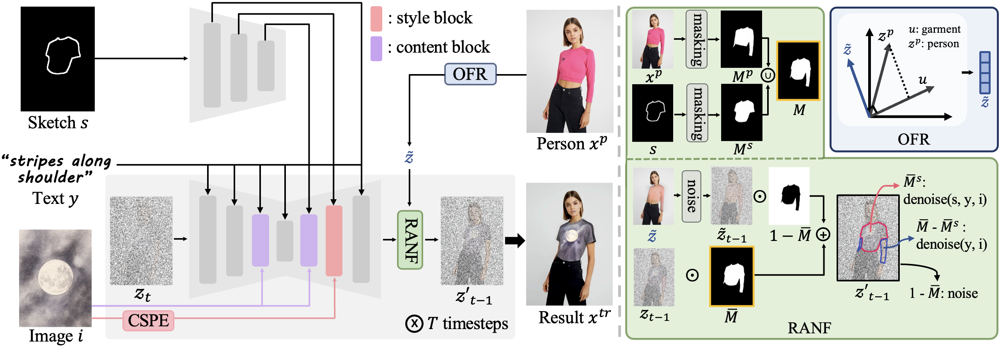
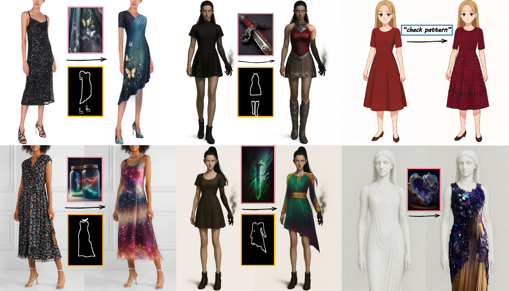
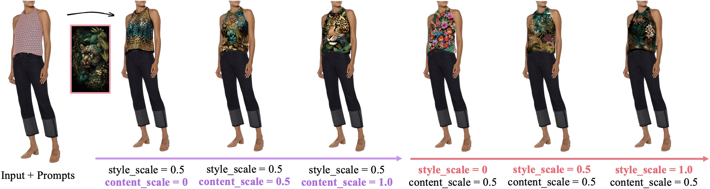
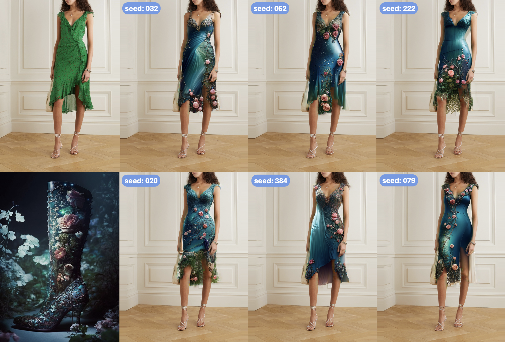

Fashion design aims to express a designer's creative intent and to depict how garments interact with the human body. Recent methods condition on multimodal inputs to support garment editing and virtual try-on. However, existing methods still (i) confine design to garment-related images, excluding creative design sources such as artwork, abstract imagery, and natural photographs, and (ii) cannot support complete outfits, including accessories. We present FEAT (Fashion Editing And Try-On from Any Design), a method that enables editing and try-on across garments and accessories using diverse design sources. To achieve this, we introduce Disentangled Dual Injection (DDI). It takes both apparel and non-apparel design sources and selectively injects design cues via content and style disentanglement. Furthermore, we propose Orthogonal-Guided Noise Fusion (OGNF), a training-free mechanism that removes residual garments via orthogonal projection and applies region-specific noise strategies to enable virtual try-on for both garments and accessories. Extensive experiments demonstrate that FEAT achieves state-of-the-art performance in design flexibility, prompt consistency, and visual realism.

Overview of FEAT. Given a person xp, a sketch s, an image prompt i, and a text prompt y, FEAT generates a try-on result xtr. Our approach incorporates scaling factors to dynamically adjust the influence of each input modality. The framework consists of two key components: DDI disentangles content and style from the image prompt via Content-Subtractive Proxy Embedding (CSPE) and Selective Dual Injection (SDI), while OGNF removes existing garments through Orthogonal Fashion Removal (OFR) and applies Region-Adaptive Noise Fusion (RANF) for seamless try-on.

FEAT generates natural and realistic try-on results that faithfully reflect the sketch and image prompt. In contrast, ControlNet + IP-Adapter leaves garment residues and suffers from strong content leakage.

Owing to its training-free design, FEAT can be applied not only to conventional human-photo fashion editing but also to a wide variety of other design domains, including game characters, animation, and even sculpture.

Visual comparisons of scaling factor variations. Our DDI effectively disentangles content and style, allowing users to selectively control each component through adjustable content and style scales.

Users can easily explore multiple design candidates under identical conditions, highlighting the practical applicability of our method.
@inproceedings{kwon2026feat,
title = {FEAT: Fashion Editing and Try-On from Any Design},
author = {Kwon, Soye and Lee, Keonyoung and Jung, Dahuin and Lee, Jaekoo},
booktitle = {Proceedings of the IEEE/CVF Conference on Computer Vision
and Pattern Recognition (CVPR)},
year = {2026}
} Demo
Demo